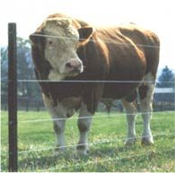
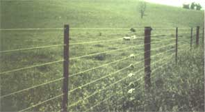
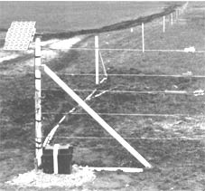
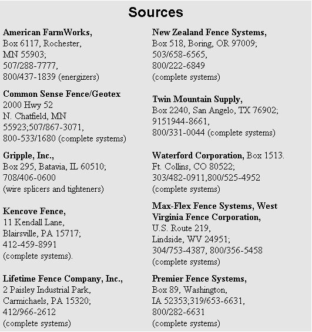

Finally! A Fence That Lasts A Lifetime
April/May 1992
By Gail Damerow
Owners of high-tension fences love to trade stories about line wires that spring back into place after being pinned to the ground by a fallen tree, flattened by a runaway bale, or challenged by a bull elk. Staples may pop loose from posts, and posts may bend or break, but wires remain taut and the fence stays fully functional.
Known as "New Zealand," "high tension," "HT," or "tension" fence, this fence of posts and smooth wire costs - strand for strand - about the same as a barbed-wire fence, yet it is far more humane. It is also as effective as woven wire, but much less costly. And best of all, a properly constructed tension fence will outlast both barbed wire and woven wire, with far less maintenance.
As complicated as the name may sound, constructing a high tension fence isn't hard: Start with some anchor assemblies, string the bottom wire as a guide for line post alignment, set line posts, string remaining line wires, tension the wires, fasten the wires to line posts, then add spacers.
High-Tensile Wire
The key to an effective tension fence is high-tensile wire that is able to withstand constant fence tension, as well as tension increases due to animal impact or cold-weather contraction. While all high-tension fences are constructed of high-tensile wire, not all fences made of high-tensile wire are high-tension fences.
"High-tensile" refers to the wire's strength. "High tension" refers to its tautness - great enough so that the wires can't be easily pried apart and will bounce back on sudden impact. Instead of bouncing back, low-tensile wire (called "soft" wire because it contains less carbon and is therefore physically softer), stretches and breaks in similar situations.
The most commonly used high-tensile wire is 12 1/2 gauge, which is stronger and easier to see than wire of higher gauge, yet not as stiff and difficult to work with as wire of lower gauge. A coating of zinc, aluminum, or aluminum-zinc alloy protects the wire from rust (zinc-coated wire - galvanized - is the best compromise between cost and durability).
Anchor Assemblies
The high-tensile wire is strung between key posts that form the fence's foundation. Collectively called "anchor" posts, they are located at each corner and end (which may or may not be at a gate). Anchor posts must be braced in order to withstand the intense pressure exerted by tensioned wire, multiplied by the number of wires in the fence.
A horizontal brace, or H-brace, is the strongest of all braces and therefore the best sort for a tension fence. The assembly's great strength comes from a brace rail, riding between the anchor post and the brace post. Fence wire pulls against the anchor post from one direction while the rail pushes against it from the other.
The anchor post is 6" in diameter, the brace post is 5". Both posts should be pressure-treated and at least 8' long; set them no less than 3' deep. Anything less would be lifted right out of the ground by tensioned line wires. In northern climates, all posts must go below the frost line to avoid frost heave.
For the rail, you'll need a milled 4 x 4 or an 8' long, 5"-diameter wood pole. You'll also need a pair of steel or fiberglass dowels or "brace pins," 3/8 to 1/2" in diameter - one 5" long and one 10" long. (To save money, you can cut your own brace pins from 3/8" rebar.)
Drill a hole in the anchor post - in the direction of the fence line - 4" from the top, 2" deep, and the same diameter as your brace pins. Then drill a hole of the same diameter and height all the way through the post.
Bore holes of the same diameter 2" deep into the ends of the brace. Drive the short pin into the anchor post, and fit the brace into the protruding end. Lift the brace into place and drive the long pin into it through the brace post, leaving 2" of the pin sticking out the other side of the post.
To keep the assembly rigid, add a diagonal stay wire. Wrap a single strand of 12 1/2 gauge high-tensile wire around the lower end of the anchor post, secure it with a Gripple UItradenam (described below), and staple it into place. Run the other end diagonally to the top of the brace post (above the protruding pin), wrap it around the post, secure it with a second Gripple, and pull the wire taut.
In moderately well-drained soil, a single H-brace assembly will support up to 10 strands of wire as an end post, and up to five strands as a corner post. Each corner, of course, requires two assemblies which are perpendicular to each other.
For a fence with more strands of wire or an especially long run (a run being the distance between anchor posts), two or three assemblies in a row offer greater holding power. To keep a double or triple assembly from buckling, line up the anchor post and brace posts in a straight line.
Pull Posts
To maintain proper tension in a long, straight run, periodically brace a line post, which then is called a "pull" post. Bracing consists of two H-assemblies, each with a second diagonal stay wire forming an "X" with the first, to compensate for the pull of wire from opposite directions. The pull post should be at least 5" in diameter and the two brace posts should be 4".
If your fence goes over hill and dale, place a post at the bottom of every significant depression or dip to eliminate gaps. Also place a post at the top of every significant knoll or rise to maintain adequate fence height. Dip posts must be well anchored to prevent pullout, rise posts to prevent leaning.
Line Posts
Anchor posts form the fence's foundation and take up line-wire tension. Spacing the line posts evenly between them helps maintain line-wire spacing despite back-scratching, pushing, and other typical livestock activities. While line wires are firmly attached to an anchor post, they're loosely affixed to line posts so they can readily move as a result of animal pressure, or expansion and contraction due to changing temperatures.
Since line posts incur less stress than anchor posts, they needn't be as stout or set as deep. Set pressure-treated wood posts at least 2 1/2' deep, steel T posts or fiberglass posts 1 1/2' to 2' deep.
Lightweight spacers of wood or fiberglass, placed between line posts, let you increase the distance between posts, reducing the fence's cost. Because spacers are firmly attached to the line wires and bounce whenever the wires move, they are sometimes called "dancers."
Always measure the distance between line posts from the center of one to the center of the next. The closer posts are spaced, the greater the load imposed on them during impact, and the greater the chance they will overturn, bend, or break. In a tension fence, the wires - not the posts - create the physical barrier that control animals.
On open, level range, set posts 100 feet apart with spacers every 33 feet between them. For a typical pasture on level terrain, space posts 30 feet apart with spacers every 10 feet. If the pasture is heavily grazed, place spacers every 5 feet; if lightly grazed, every 15 feet.
Align posts on the side of the fence to which the wire will be attached - the inside if your primary goal is to keep livestock in a corral or pasture; the outside if your goal is to keep wildlife out of your orchard or garden. Careful alignment is especially important when you use wood posts, since they vary in diameter.
Stretch the bottom wire between adjoining anchor posts and use it as your guide for aligning line posts. Set the posts a fraction of an inch from the wire so your fence doesn't wander off into left field.
Line Wires
When all of your line posts are in, string the remaining line wires between adjoining anchor posts. Attach the wires to the line posts after the wires have been fully tensioned. Make an exception for rise and dip posts, since wire can't be easily pulled up or down (as the case may be) after being tensioned.
Fasten wires to line posts with 1 3/4" galvanized fence staples, set only so deep that the wire can slide freely between staple and post. Attaching line wires with electric-fence insulators instead of staples increases your cost, but also increases the life of your fence by reducing friction that wears away the wire's coating.
How many strands you string and how far apart you space them depends on several things: what kinds of animals you plan to confine, their size, how active they are, and how crowded they are. To control a bunch of beasts, design your fence for the smallest and/or most active.
Since the bottom one-third of any fence experiences the most animal pressure, line wires are spaced closer together at the bottom and progressively farther apart toward the top. A typical tension fence has eight or 10 wires, spaced as shown in the accompanying chart.
Splicers
You have several options for connecting the end of one roll of wire to the beginning of another, or for splicing a broken wire: Compression sleeves are little metal tubes that you compress after threading wires through opposite ends. Connector twists are stiff wire spirals that you wind around butted wire ends. Wirelinks are spring-loaded metal cartridges that work like Chinese handcuffs from a carnival.
Gripples are rectangular devices with internal serrated rollers that grasp wires. They are the easiest splicers to use if you don't have someone to hold the wire ends while you fasten them together.
Similar choices are available for tying off wire at anchor posts. You can thread a compression sleeve onto the wire, wrap the wire once around the post, tuck the end into the sleeve, and crimp the sleeve shut. Alternatively, you can bring the wire around the post and fasten it with a connector twist. A Gripple or a Wirelink (the end-splice version of a Wirevise) has the advantage of letting you take up excess slack after tying off the wire.
Unless you use Wirelinks, which are affixed through bored holes, staple line wires to anchor posts so they can't slip up or down. Set staples snugly, but not so tightly that you bury the staple into the post and damage the wire.
In-Line Tensioners
When all your line wires are strung and fastened, tighten them with in-line tensioners. Like splicers, in-line tensioners come in various styles. Be sure to select a style designed specifically for tension fences.
Despite their varied appearances, in-line tensioners all work essentially the same way. Attach one to the line wire and turn it to wind up slack. You need one or more for each wire in your fence. Exactly where along the wire you place the tensioner depends on the length of the run, and on whether your terrain is level or sloped.
If your fence goes up a hill, install tensioners near the downslope anchor post. If the run is less than 600 feet, put tensioners near an anchor post that allows easy access. If the run is over 600 feet, install tensioners at midpoint for even tensioning.
How much wire you can tighten with one tensioner varies with the brand. A typical tensioner can handle a straight run of up to 3,000 feet. If the distance between anchor posts is greater, place two tensioners on each wire at evenly spaced intervals. Dip posts increase friction, decreasing the length of wire one tensioner can handle by 500 feet.
Install tensioners no closer to the nearest post than four feet so that you have plenty of cranking room. Since a tensioner creeps forward as it takes up slack, orient it to move away from the post.
After all tensioners are installed, tighten line wires one by one, starting at the top. Come back the next day and retighten all tensioners a click or two.
Tension
Your fence will function properly only when the line wires are kept under proper tension. If tension is too low, livestock can push the wires apart and get through. If tension is too high, anchor posts will pull out and brace assemblies will buckle. Over-tensioned wire can also break and recoil, causing serious injury. Wear gloves and safety goggles when you work with high-tensile wire.
Even if the wire doesn't break, over-tensioning can stretch it beyond its elastic limit. This will cause it to remain permanently stretched. You should tension high-tensile wire only to one-third its minimum breaking strength so that additional stretching due to impact or high temperature won't push it beyond its limit. General practice is to tension 12 1/2 gauge wire to between 250 and 300 pounds.
Measure tension directly with a torque wrench if your in-line tensioners are the kind that you can tighten with a socket wrench. A torque of 12 foot-pounds is approximately equal to 250 pounds.
A compression spring, installed next to an in-line tensioner, offers another way to measure tension. When the spring is shortened by 1 1/2 to 2 inches (depending on its brand), the wire is tensioned to 250 pounds. Some brands have tension indicator marks, each notch representing approximately 100 pounds.
Save money by placing a spring on one wire only, tensioning the rest by feel and sight. Pull each wire toward you the same distance and then judge whether it offers the same amount of resistance as the wire with the spring.
Once your fence is properly tensioned, it requires only infrequent adjustment if you live in a temperate area. If, however, your annual temperature range exceeds 100°F (56°C), reduce the tension each fall and increase it again each spring. For every 10°F (5°C) above or below 60° F ( 15°C), subtract or add 10 pounds (50 N) of tension.
Electric Tension Fence
A tension fence can be designed as a physical barrier that animals can't get through, or as a psychological barrier that intimidates animals into not wanting to get through. Sufficient intimidation, for most animals, is the threat of an electric shock.
Like all fences, an electrified tension fence has built-in disadvantages as well as advantages. Unless it also functions as a physical barrier, it must be electrified at all times to remain effective. In addition, you may have to alter your management practices - no longer can you crowd animals against a fence corner for routine handling. In some areas, the law prohibits electric fences adjacent to roadways or public lands. In other areas, you must post warning signs at specified intervals.
So why, you might ask, would anyone electrify a tension fence? For one thing, the electric version is cheaper because it requires fewer wires. Also, since the wires aren't strung at the same high tension and aren't subject to the same amount of animal pressure, anchor assemblies needn't be as strong.
An electric fence lasts longer, since animals won't rub against it, climb on it, or push through it. Most importantly, an electric tension fence gives you better control of livestock and greater protection from predators.
SELECTING AN ENERGIZER

A solar-powered fence with fiberglass
posts helps keep
in livestock and keep out the predators
Energizer, controller, fence charger, power unit - all these terms refer to that little box responsible for the big jolt you get when you touch an electric fence. The right size energizer for you depends on the length of your fence, how many pulsed wires it contains, what kind of wire you use, what kinds of animals you want to control, and how much weed encroachment is likely.
Look for a "high-energy, low-impedance" controller, so-called because it generates a lot of energy without restricting energy flow. These units are more powerful than conventional controllers, yet remain extremely safe. Despite their high voltage, pulses last as little as 0.0001 seconds and are spaced about one second apart. Touch the fence and you'll get quite a shock, but the ensuing off-time lets you pull back and recover.
Where electricity isn't available or power outages are frequent, a battery-operated energizer may be the answer. To prevent rapid draining of the battery, however, these units pack less wallop than a plug-in (or mains) unit, and they can't handle much weed load.
For either a plug-in or a battery-operated energizer, except to pay between $100 and $350, depending on quality and output.
Deterrent Value
Exactly how much deterrent value an electric fence has depends on the effectiveness of its energizer (see "Selecting an Energizer") and the conductivity of its wires. Happily, the same 12 1/2 gauge, high-tensile wire used for a standard tension fence is also perfect for constructing an electric fence. This highly conductive wire, coupled with a high-energy, low-impedance energizer, makes an electric tension fence far more reliable than the conventional electric fences that fell out of favor years ago.
Constructing an electrified tension fence is not much different from constructing a non-electrified one. The chief difference is that an electric fence has fewer wires under considerably less tension. Compared to between 250 and 300 pounds of tension for a barrier fence, an electric fence needs only 150 to 200 pounds.
On level terrain, line posts needn't be as closely spaced - as for a barrier fence - because an electric fence doesn't incur as much animal pressure. Posts can be as far apart as 100 feet, with spacers at midpoint. For a fence with up to six line wires, single-span anchor assemblies work tine. For seven or more wires, you'll need double assemblies. For long, straight runs, include a pull-post assembly at least every half-mile.
Insulators provide a way to fasten wires to posts while keeping the two far enough apart to prevent jumping sparks that cause energy leakage from the pulsed wires. (Note: Use only those insulators designed for a tension fence.)
Fiberglass posts are self-insulating, saving the cost of insulators and eliminating the chance of reduced shock value due to dirty or defective insulators.
Hot Wires
For the animal to be controlled, the most important wire in an electric fence is the one at normal nose height, or snout two-thirds the animal's total height. If you keep animals of varying ages, sizes, or temperaments, or if more than one kind of muncher is pillaging your plants, construct your fence for the most difficult to control among them. (The chart offers a starting place for designing your fence.)
In order for any electric fence to work, current must flow from the energizer through a line wire and back to the energizer. When this circuit is completed by an animal standing on the ground, the system is called a ground-return system.
If the ground is dry or covered with snow, or if the animal hits the fence at a run, a ground-return system doesn't work well. A wire-return system, involving the grounding of some line wires, is more reliable, because it is not dependent on soil conditions. An animal need only touch one hot wire and one grounded wire to complete the circuit and suffer the shocking consequences.
Grounding
Grounding quite literally means providing electrical pulses a ready path through the soil. A good ground is essential to the proper functioning of an electric fence and - whether the fence is electrified or not - prevents lightning damage to buildings, livestock, and humans.
Grounding is accomplished by means of one or more 5/8" diameter steel rods, available at electrical- and building-supply outlets. For a non-electrified fence, you'll need rods long enough to extend six" above your line posts and as deep into the soil as necessary to reach moisture.
Drive each rod close to a post, on the same side as the line wire. Secure the rod to the post, with the wire sandwiched between them so the rod makes firm contact.
Use at least one grounding rod between each pair of anchor assemblies. In dry soil, place the rods no less than 150 feet from each anchor post and no more than twice that distance from the next nearest grounding rod. Where the soil remains moist year round, you can double those distances.
For an electric fence, allow at least three feet of rod per joule of energizer output. Since one long rod is impractical, use two or more of sufficient length to make up the necessary total. You may find that you'll need as many as seven rods just for the energizer alone.
Place the first rod as near as possible to the energizer, outside any building to minimize the chance of lightning causing a fire or electrocution. Drive the rod deep enough to reach moist soil, leaving six inches above ground. Space additional rods at least 10 feet apart and connect them with copper ground wire secured with ground clamps.
To further reduce the potential for lightning damage, you can install a lightning diverter and ground rod at least every mile along your electric fence. In areas where severe lightning is frequent, place diverters every half-mile. If your fence measures one-half mile or less, put a diverter at each corner.
In some areas, building codes dictate ground rod length and diameter. Local codes also dictate how far the fence's grounding rods must be from those of nearby utilities.
"Build all your fences horse high, pig tight, and bull strong," the old saying goes. If you follow these instructions and suggestions, not only can your well-built tension fence be horse high, pig tight, and bull strong, but it will look good, require little maintenance, and last a lifetime.
Editor's note: Material in this article is adapted from and appears in Gail Damerow's latest book, Fences for Pasture and Garden, which is packed with in-depth information on planning and constructing fences of all kinds. The book is available from Storey Communications (Schoolhouse Road, Pownal, VT 05261; 802/823-5811).
|
 The lowdown on building a high-tension fence |
Notice the spacers that let you increase the distance between posts, reducing the fence's cost. |
 A solar-powered fence with fiberglass posts helps keep in livestock and keep out the predators |
|
 |
 |
|